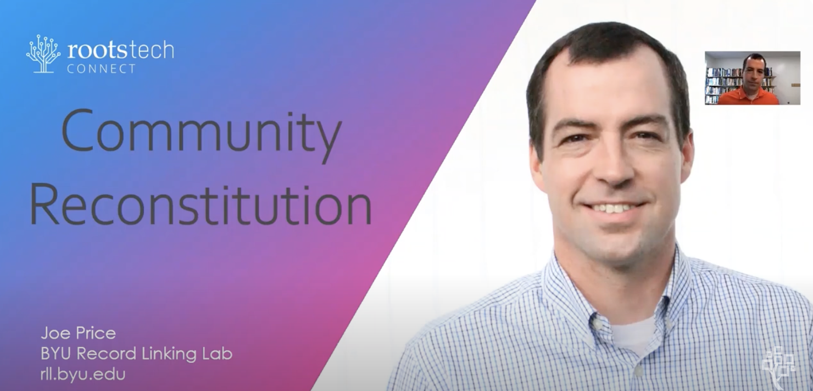

The Current Problem with Genealogy Training

A few years ago, I received my first Family History calling. The learning curve I experienced was brutal! Locals were only able to help during the day which didn't work because I had a full time job. I found the lack of free and engaging content incredibly frustrating. Many hours were spent watching long and often boring tutorial videos. While they do have great information, it was such a chore to keep motivated.
As a stake consultant I would always ask the ward consultants how they learned how to do genealogy. The overwhelming response was something akin to pulling teeth. Many said that If it wasn't for the spirit of Elijah, they wouldn't have kept going. I find it alarming that there are so few accredited institutions in this specific field and they all seem to be safeguarding the training practices. You either have to relocate or have a lot of money or want to do it professionally in order to actually get access to the resources that you need to succeed.
Another pain point for many beginners is that genealogy is such a wide field. It is nearly impossible for one solo person to be involved in every single aspect that genealogy provides. I believe in developing microskills. I've found that as we become masters of individual skills, we gain the confidence and excitement to keep going.
For example, in order to index a batch of records successfully one needs to have a certain set of micro skills like paleography, psychology, sociology, geography, history etc. Anyone can sit down and plug away at it with guesses. But in order to truly be successful, quick, and efficient, micro skills are necessary. I've seen that many of these skills are not being taught in our system today; at least not effectively at the public level. This is why it will be so crucial in the days ahead to have access to quality training materials and valuable resources for youth and adults completely free.

What Needs to Change
One of my major inspirations is Joe Price with the BYU Record Linking Lab who has done extensive work at bringing genealogy into the new age. Tools such as the Map App, PowerLinker, Reverse Indexing, and others have really made big strides in helping all age groups develop a new love for genealogy. This presentation changed my whole trajectory. I found his '10 X' concept very motivating. I believe that there is a great need to hasten this work and his presentation is a great motivator that seems very possible.
I think that we have a duty to revamp the way that we look at genealogical training. And rebuild it from the ground up. My goal in life is to bridge the gap between Boomer-genealogy and Millennial-genealogy. Rather than constantly fight against new trends, I think we need to embrace the shortened attention spans and use technology to its fullest. Let the computer do what it does best and let the humans do what they do best.